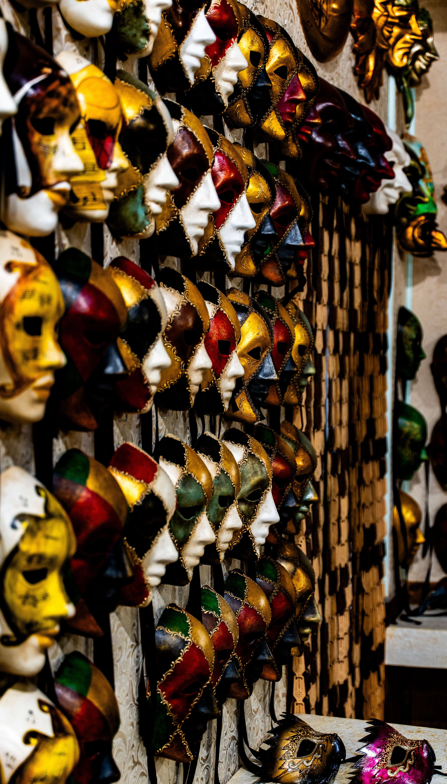

SOCIEDAD
Lookism: el peso de ser visto

¿Cuándo empezamos a sentir que nuestra apariencia era algo que teníamos que justificar?
Es extraño pensar en cuántas personas se levantan cada mañana y lo primero que hacen es buscar algo que no les gusta de sí mismas. Una nariz, la forma de su cara, su peso, su altura o cualquier característica que, en otro contexto, probablemente ni siquiera tendría tanta importancia.
Pero vivimos en una época donde parece que siempre hay algo que corregir.
Abres Instagram y encuentras personas con rostros aparentemente perfectos. En TikTok aparecen videos explicando cómo mejorar tu mandíbula, qué características te hacen atractivo y cuáles te colocan por debajo de los demás. Incluso existen comunidades enteras dedicadas a analizar rostros como si fueran objetos que pudieran calificarse del uno al diez.
Y lo más preocupante es que todo esto ha comenzado a parecer normal.
Ya no basta con ser una persona. Ahora también parece necesario ser una versión estéticamente aceptable de ella.
A este fenómeno se relaciona el término lookism, que describe la discriminación y el trato desigual que reciben las personas según su apariencia física.
Porque aunque nos guste pensar que todos tenemos las mismas oportunidades, la realidad es que la apariencia puede influir en cómo nos tratan, cómo nos perciben e incluso en las oportunidades que recibimos.
Una persona considerada atractiva puede recibir más atención, más paciencia o un trato más amable. Mientras tanto, alguien que no cumple con determinados estándares puede experimentar rechazo, burlas o simplemente la sensación de ser invisible.
No siempre ocurre de manera consciente. A veces ni siquiera nos damos cuenta de cuánto influye la apariencia en nuestra manera de relacionarnos.
Pero sus consecuencias pueden sentirse durante años.
Pensemos en alguien que durante la adolescencia comenzó a recibir comentarios sobre su cuerpo. Quizás fueron bromas entre compañeros, observaciones de familiares o comparaciones que parecían inofensivas.
Puede que quienes hicieron esos comentarios los hayan olvidado hace mucho tiempo.
Pero esa persona todavía los recuerda.
Quizás ahora evita salir en fotografías. Tal vez se incomoda cuando alguien la observa demasiado tiempo o siente que necesita arreglarse incluso para hacer cosas tan simples como ir a comprar comida.
Y no necesariamente porque alguien vaya a juzgarla ese día, sino porque ha aprendido a anticipar ese juicio.
Eso es lo triste de vivir bajo una comparación constante. Que eventualmente ya ni siquiera necesitamos que otra persona nos critique. Aprendemos a hacerlo nosotros mismos.
El internet solamente ha conseguido llevar este fenómeno a una escala difícil de imaginar.
Antes podíamos compararnos con nuestros compañeros, vecinos o las personas que veíamos en televisión. Ahora tenemos acceso, durante todo el día, a miles de rostros y cuerpos seleccionados cuidadosamente para mostrar su mejor versión.
Fotografías tomadas desde determinados ángulos, iluminación estudiada, filtros, retoques y, cada vez más, imágenes que ni siquiera representan cuerpos reales.
Sin embargo, terminamos comparando nuestra apariencia cotidiana con esas representaciones.
Nos miramos al espejo después de pasar horas viendo personas que parecen cumplir con estándares imposibles y nos preguntamos por qué nosotros no nos vemos igual.
Como si fuera una comparación justa.
Y hay algo especialmente cruel en todo esto: los estándares tampoco permanecen iguales.
Lo que hoy se considera atractivo puede dejar de serlo en unos años. Cambian los cuerpos de moda, las facciones deseadas, los estilos y hasta las características que supuestamente debemos corregir.
Siempre aparece una nueva inseguridad que antes no sabíamos que teníamos.
Una nueva forma de analizar nuestro rostro. Una nueva parte del cuerpo que debemos mejorar. Un nuevo producto que promete acercarnos un poco más a esa imagen ideal.
Y detrás de muchas de estas inseguridades también existe un mercado.
Cremas, tratamientos, suplementos, procedimientos estéticos, aplicaciones y todo tipo de productos que encuentran clientes entre personas convencidas de que algo en ellas necesita cambiar.
No significa que cuidarse o modificar la propia apariencia sea necesariamente negativo. El problema aparece cuando dejamos de distinguir entre hacer algo porque realmente lo deseamos y hacerlo porque sentimos que, de otra manera, no seremos suficientemente aceptados.
Porque una cosa es querer verse de determinada manera y otra muy diferente es sentir que nuestra apariencia decide cuánto merecemos.
En internet incluso hemos empezado a hablar de las relaciones humanas utilizando términos que parecen sacados de un mercado.
Personas de alto valor. Personas de bajo valor. Niveles de atractivo. Rankings. Categorías.
Como si conocer a alguien consistiera en evaluar sus características físicas y determinar si merece nuestra atención.
Y quizás lo más triste es lo fácilmente que estas ideas pueden instalarse en la manera en que alguien se ve a sí mismo.
Un adolescente que todavía está creciendo puede llegar a convencerse de que su vida romántica, sus amistades y su futuro están determinados por la estructura de su cara o por unos centímetros de altura.
Alguien puede comenzar a sentirse inferior antes de que otra persona siquiera lo haya rechazado.
Y cuando esa inseguridad se mezcla con un internet lleno de comparaciones, la sensación de no ser suficiente puede volverse una parte constante de la vida cotidiana.
Hay personas que dejan de disfrutar momentos porque están demasiado preocupadas por cómo se ven mientras los viven.
Una fotografía con amigos deja de ser un recuerdo y se convierte en algo que hay que revisar varias veces antes de permitir que alguien lo publique.
Una salida puede comenzar con horas frente al espejo. Una conversación puede terminar acompañada de la pregunta de si la otra persona nos habrá considerado atractivos.
Incluso una experiencia bonita puede quedar opacada por una inseguridad que nadie más notó.
Y mientras tanto, seguimos consumiendo contenido que nos recuerda todo lo que supuestamente nos falta.
No creo que las redes sociales sean las únicas responsables. La presión por cumplir con determinados estándares de belleza existe desde mucho antes de Instagram o TikTok. Pero estas plataformas han conseguido que la comparación sea constante, inmediata y prácticamente imposible de evitar mientras participamos en ellas.
Tampoco todos experimentan esta presión de la misma manera. Para algunas personas puede ser una preocupación pasajera. Para otras, la apariencia termina condicionando cómo se relacionan, qué oportunidades buscan y qué espacios sienten que pueden ocupar.
Y eso debería preocuparnos más de lo que parece.
Porque no estamos hablando simplemente de jóvenes que quieren verse bien.
Estamos hablando de personas que comienzan a organizar partes de su vida alrededor del miedo a no ser suficientemente atractivas.
De quienes sienten que necesitan cambiar su cuerpo antes de permitirse disfrutar su juventud. De quienes observan sus fotografías buscando defectos en lugar de recuerdos. De quienes creen que primero deben alcanzar cierta apariencia para merecer experiencias que otros viven sin pensarlo demasiado.
Y hay algo profundamente triste en crecer sintiendo que uno mismo es un proyecto interminable de correcciones.
Siempre hay algo más que mejorar. Algo que ocultar. Algo que comparar.
A veces pienso en cuántos momentos se habrán perdido por esa preocupación. Cuántas personas habrán rechazado una invitación, evitado conocer a alguien o dejado de hacer algo que deseaban simplemente porque no se sentían cómodas con su apariencia.
Y lo peor es que muchas de esas inseguridades no nacieron de una reflexión personal, sino de estándares que alguien más decidió que debíamos cumplir.
Hemos construido espacios donde la belleza puede convertirse en una ventaja social, mientras que no ajustarse a determinados ideales puede sentirse como una desventaja permanente.
Después nos sorprendemos de que tantas personas tengan problemas con su autoestima.
Como si esas inseguridades aparecieran de la nada.
Como si no viviéramos rodeados de imágenes, comentarios y discursos que nos enseñan constantemente a observarnos desde los ojos de los demás.
Quizás lo más inquietante no sea que existan estándares de belleza. Siempre han existido.
Lo inquietante es haber llegado a un punto donde tantas personas sienten que deben evaluarse constantemente para saber si son suficientemente atractivas, suficientemente deseables o simplemente suficientes.
Y mientras seguimos discutiendo qué características hacen atractivo a alguien, pocas veces nos preguntamos qué le estamos haciendo a una generación que ha aprendido a mirarse con tanta dureza.
Porque el problema no es solamente cómo nos vemos frente al espejo.
Es todo lo que hemos comenzado a perder mientras intentamos parecernos a alguien más.
Volver a artículos